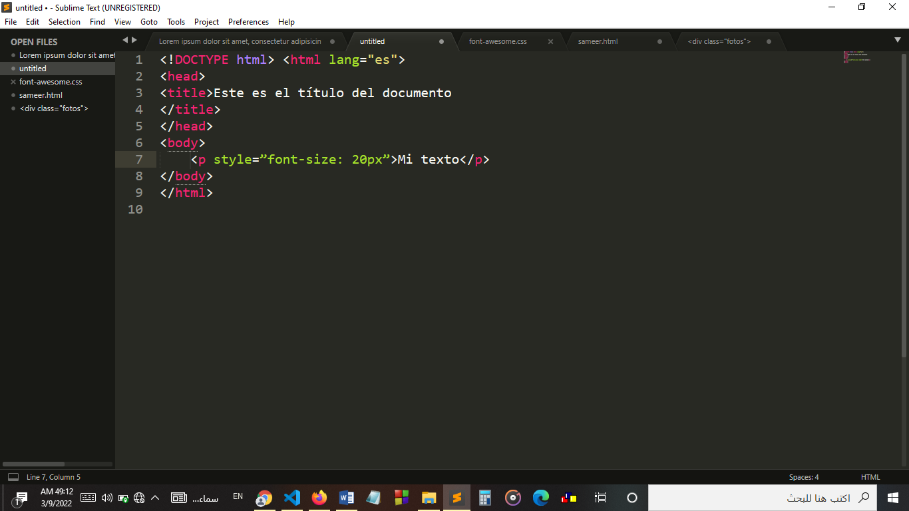
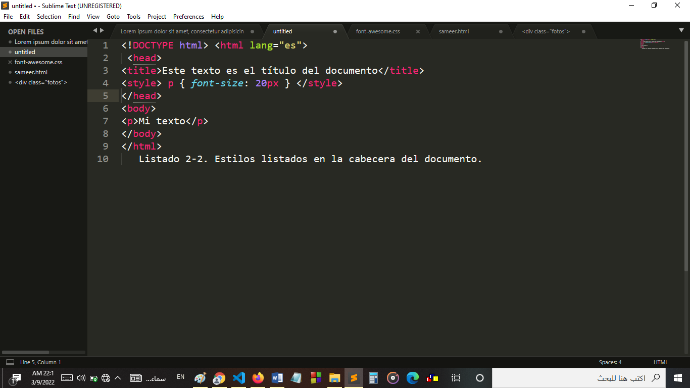
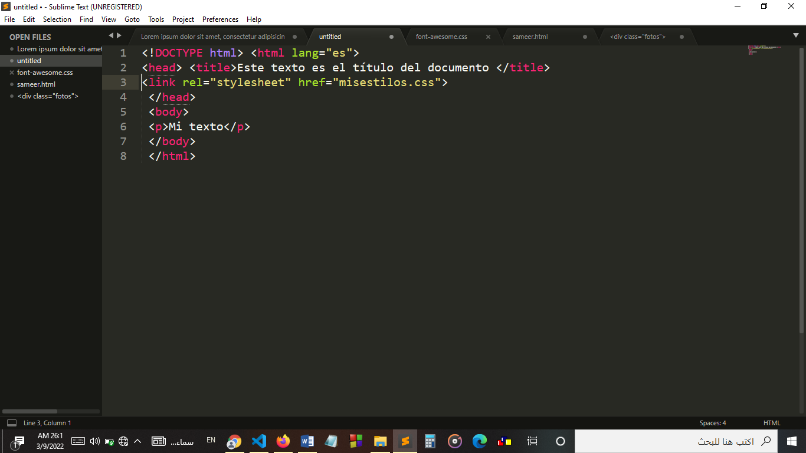
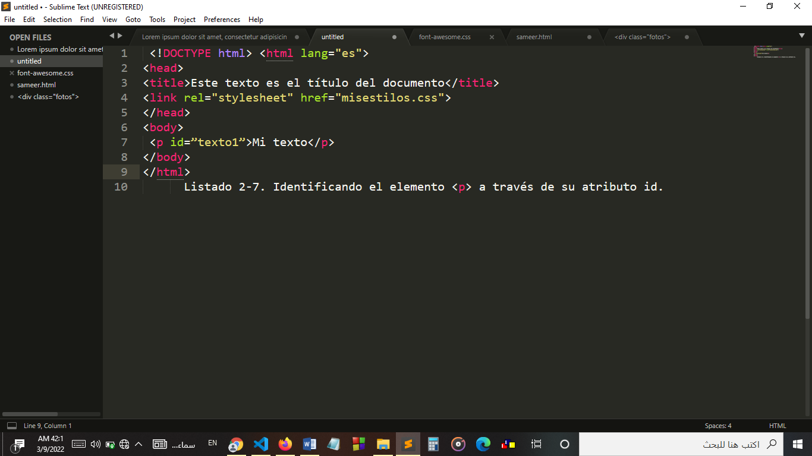
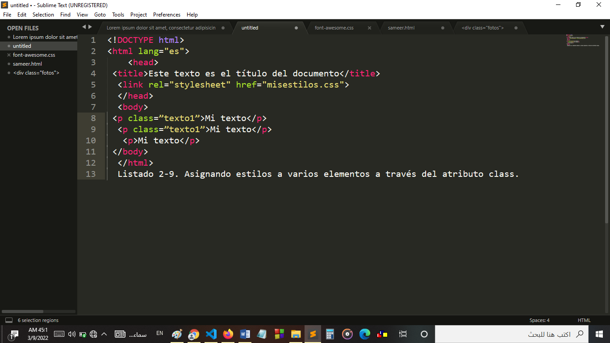
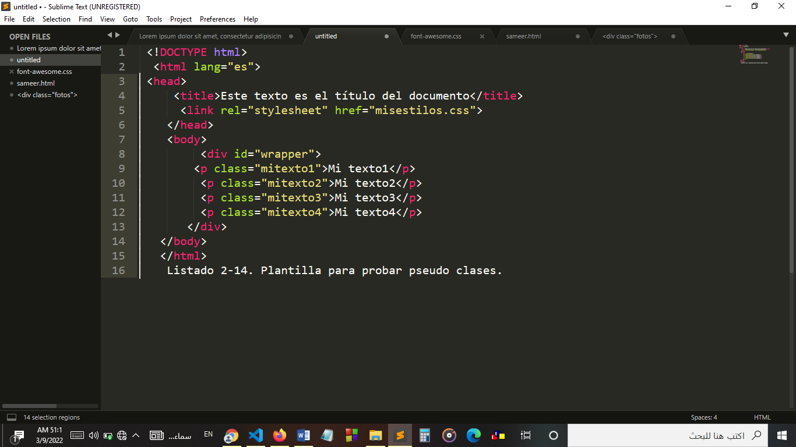

As we made clear earlier, the new HTML specification (HTML5) doesn't just describe new HTML elements or the
language itself. The web demands design and functionality, not just structural organization or definition of sections. In
In this new paradigm, HTML is presented together with CSS and Javascript as a single integrated tool. The function of
each technology has already been explained in previous chapters, as well as the new HTML elements responsible for the
document structure. Now is the time to analyze CSS, its relevance within this strategic union and its
influence on the presentation of HTML documents. Officially CSS has nothing to do with HTML5.
CSS is not part
of the specification and never was. This language is, in fact, a plugin developed to overcome the
limitations and reduce the complexity of HTML. In the beginning, attributes inside HTML tags provided styles
essential for each element, but as the language evolved, the writing of codes became more
complex and HTML by itself could no longer satisfy the demands of designers.
Consequently, CSS was soon
adopted as the way to separate structure from presentation. Since then, CSS has grown and gained importance,
but always developed in parallel, focused on the needs of designers and away from the development process.
HTML evolution. CSS version 3 follows the same path, but this time with a bigger compromise. The specification
of HTML5 was developed considering CSS in charge of the design.
Due to this consideration, the integration between
HTML and CSS is now vital for web development and this is the reason why every time we mention HTML5 as well
we are referring to CSS3, although officially they are two completely separate technologies. In this
At the moment the new features incorporated in CSS3 are being implemented and included along with the rest of the
specification in browsers compatible with HTML5. In this chapter, we are going to study basic concepts of CSS and the
new CSS3 techniques now available for presentation and structuring.
We will also learn how to use the new
selectors and pseudo classes that make it easier to select and identify HTM elements
Basic concepts: CSS is a language that works together with HTML to provide visual styles to the elements of the document, such as size,
color, background, borders.
IMPORTANT :
Right now the new CSS3 additions are being implemented in the latest versions of most browsers.
popular, but some of them are still experimental. For this reason, these new styles should be preceded by
prefixes such as –moz- or -webkit to be effectively interpreted. We will discuss this important matter later.
- Styles and structure :
Although each browser guarantees default styles for each of the HTML elements, these styles are not
necessarily satisfy the requirements of each designer. They are usually very far from what
we want for our websites. Designers and developers must often apply their own styles to get
the organization and visual effect they really want.
IMPORTANT: In this part of the chapter we are going to review CSS styles and explain some basic techniques to define the
structure of a document. If you are already familiar with these concepts, feel free to skip the
parts you already know.
Block elements Regarding the structure, basically each browser orders the elements by default according to
to its type: block (block) or inline (inline). This classification is associated with the way in which the elements are
displayed on screen.
-*- Block elements are positioned one above the other down the page.
-*- Inline elements are positioned side by side, next to each other on the same line, without any line breaks
unless there is no more horizontal space to place them.
Almost all structural elements in our documents will be treated by browsers as elements.
block by default. This means that each HTML element that represents a part of the visual organization
(eg section, nav, header, footer, div) will be positioned below the previous one. In Chapter 1
we create an HTML document with the intention of reproducing a traditional website. The design included bars
horizontal and two columns in the middle. Due to the way browsers display these elements
by default, the result on the Enter
screen is far from our expectations. As soon as the HTML file with the code in Listing 1-18,
Chapter 1, is opened in the browser, the wrong position on the screen of the two columns defined by the
section and aside elements is clearly visible. One column is below the other instead of next to it.
side, as it should. Each block (block) is displayed by default as wide as possible, as high
as the information it contains and one on another
box models :
To learn how we can create our own organization of screen elements, we must first understand
how browsers process HTML code. Browsers treat each HTML element as a box. One page
web is actually a group of boxes ordered following certain rules. These rules are established by styles
provided by browsers or by designers using CSS. CSS has a default set of properties
intended to override the styles provided by browsers and obtain the desired organization. these properties
are not specific, they have to be combined to form rules that will later be used to group boxes and obtain
the correct layout on the screen.
The combination of these rules
it is normally called a model or layout system. All these rules applied together constitute what is
calls a box model. There is only one case model that is considered standard these days, and many others that are still being used.
are in an experimental state. The valid and widely adopted model is the so-called Traditional Box Model,
which has been used since the first version of CSS. Although this model has proven to be effective, some models
experimental attempts to overcome its shortcomings, but the lack of consensus on the most suitable replacement still maintains
This old model is still in force and most of the websites programmed in HTML5 continue to use it.
- Style Basics :
Before we start inserting CSS rules into our styles file and applying a box model,
we must review the basic concepts about CSS styles that are going to be used in the rest of the book
. Applying styles to HTML elements changes the way they are presented on the screen. What
explained above, browsers provide default styles that in most cases are not
enough to meet the needs of designers. To change this, we can overwrite these
styles with ours using different techniques.
Basic concepts :
In this book you will find only a brief introduction to CSS styles. Only
we mention the techniques and properties that you need to know to understand the topics and codes studied in
upcoming chapters. If you think you don't have enough CSS experience and need more information visit
our website and follow the links to this chapter.
Do it yourself :
Inside an empty text file, copy each HTML code studied in the following
listings and open the file in your browser to check it out. Note that the file must
have the .html extension to be opened and processed correctly.
- online styles :
One of the simplest techniques for incorporating CSS styles into an HTML document is to assign the styles
inside the tags via the style attribute. Listing 2-1 shows a simple HTML document that contains
the p element modified by the style attribute with the value font-size: 20px. This style resizes by
Default the text inside the p element to a new size of 20 pixels.

Listing 2-1.
CSS styles within HTML tags. Using the technique demonstrated above is a good way to test
styles and get a quick view of their effects, but it is not recommended to apply styles to the entire
document. The reason is simple: when we use this technique, we must write and repeat each style in each
one of the elements we want to modify, increasing the size of the document to unacceptable proportions
and making it impossible to maintain and update. Just imagine what would happen if you decided that instead of
20 pixels the size of each of the p elements should be 24 pixels. I would have to modify each
styling on each p tag in the entire document.
- online styles :
A better alternative is to insert the styles in the document header and then use references
to affect the corresponding HTML elements:

Listing 2-2. Styles listed in the document header.
The style element (shown in Listing 2-2) allows developers to group styles
CSS inside the document. In previous versions of HTML it was necessary
specify what kind of styles would be inserted. In HTML5 the default styles are CSS, so
So we don't need to add any attribute in the opening style tag. The highlighted code
in Listing 2-2 has the same function as the line of code in Listing 2-1, but in Listing 2-2
we didn't have to write the style inside each p tag because all the p elements were already
affected. With this method, we reduce our code and assign the styles we want to elements
specific using references. We will see more about references in this chapter.
- external files :
Declaring the styles in the document header saves space and makes the code more consistent and
updatable, but it requires us to make a copy of each style group in every document in our
website. The solution is to move all the styles to an external file and then use the link element
to insert this file into each document that needs them. This method allows us to change the
styles entirely by simply including a different file. It also allows us to modify or adapt
our documents to each circumstance or device, as we will see at the end of the book. In the chapter
1, we studied the link tag and how to use it to insert files with CSS styles into our documents. Using the
line link rel=”stylesheet” href=”mystyles.css” we tell the browser to load the file mystyles.css because it contains
all the styles needed to present the document on the screen. This practice was widely adopted by designers who
they are already working with HTML5. The tag referencing the CSS file will be inserted in each of the documents that
require those styles:

Listing 2-3. Applying CSS styles from an external file.
Do it yourself :
From now on we will add CSS styles to the file called mystyles.css. You must create this file in
the same directory (folder) where the HTML file is located and copy the CSS styles inside it to check how they work
Basic concepts :
CSS files are common text files. Just like HTML files, you can create them using any
text editor like Windows Notepad, for example.
- Referencias :
Storing all our styles in an external file and inserting this file inside every document that needs it is
very convenient, however we will not be able to do it without good mechanisms that help us to establish a specific relationship between
these styles and the elements of the document that are going to be affected. When we talked about how to include styles in the document,
we show one of the techniques often used in CSS to reference HTML elements. In Listing 2-2, the style to change
the font size referenced each p element using the p keyword. In this way the style inserted between the
style tags referenced each p tag in the document and assigned that particular style to each of them. exist
several methods to select which HTML elements will be affected by the CSS rules:
-*- reference by element keyword
-*- reference by id attribute
-*- reference by the class attribute
We will see later that CSS3 is quite flexible in this respect and incorporates new and more specific techniques for referencing elements,
but for now we will apply only these three.
- referencing with keyword :
By declaring CSS rules using the element keyword we affect every element of the same class in the document.
For example, the following rule will change the styles of all p elements: p { font-size: 20px } Listing 2-4. referencing
by keyword. This is the technique presented previously in Listing 2-2. Using the keyword p in front of the
rule we are telling the browser that this rule should be applied to every p element found in the HTML document.
All text wrapped in p tags will be 20 pixels in size. Of course, the same will work for any
another HTML element. If we specify the keyword span instead of p, for example, each text between span tags
will have a size of 20 pixels:
span { font-size: 20px }
But what if we only need to reference a specific tag? Should we use the style attribute again inside this
label? The answer is no. As we learned earlier, the Inline Styles method (using the style attribute inside HTML tags)
it is an obsolete technique and should be avoided. To select a specific HTML element from the rules in our CSS file,
we can use two different attributes: id and class.
- Referencing with the id attribute :
The id attribute is like a name that identifies the element. This means that the value of this attribute cannot be duplicated.
This name must be unique throughout the document. To reference a particular element using the id attribute from our
CSS file the rule must be declared with the # symbol in front of the value we use to identify the element: #text1
{ font-size: 20px } Listing 2-6. Referencing through the value of the id attribute. The rule in Listing 2-6 will be applied to the
HTML element identified with the attribute id=”text1”. Now our HTML code will look like this:

Listing 2-7. Identifying the p element through its id attribute.
The result of this procedure is that every time we make a reference using the identifier text1 in our
CSS file, the element with that id value
will be modified, but the rest of the p elements, or any other elements in the same document, will not be affected. This is a way
extremely specific way of referencing an element and is often used for more general elements, such as tags
structural. The id attribute and its specificity is actually more appropriate for Javascript references, as we will see in
upcoming chapters.
- Referencing with the class attribute :
Most of the time, instead of using the id attribute for styling purposes, it's better to use class. This attribute is more flexible
and can be assigned to each HTML element in the document that shares a similar layout: .text1 { font-size: 20px } Listing 2-8.
Referencing by the value of the class attribute. To work with the class attribute, we must declare the CSS rule with a dot before
Of the name. The advantage of this method is that inserting the class attribute with the value text1 will be enough to assign these
styles to any element we want:

Listing 2-9. Assigning styles to various elements through the class attribute.
The p elements on the first two lines within the body of the code in Listing 2-9 have the class attribute.
with the value text1. As we said previously, the same rule can be applied to different elements in the same
document. Therefore, these first two elements share the same rule and both will be affected by the
style of Listing 2-8. The last p element preserves the default styles given by the browser.
The reason we must use a dot in front of the rule name is that it is possible to build more complex references.
For example, you can use the same value for the class attribute on different elements but assign different styles to them.
each type: p.text1 { font-size: 20px } Listing 2-10. Referencing only p elements through the value of the class attribute.
In Listing 2-10 we created a rule that references the class called text1 but only for elements of type p. If any other
element has the same value in its class attribute will not be modified by this particular rule.
- Referencing with any attribute :
Although the reference methods studied above cover a wide spectrum of situations, sometimes they are not enough.
to find the exact item. The latest version of CSS has added new ways to reference HTML elements. One of
them is the Attribute Selector. Now we can reference an element not only by the id and class attributes but also through
from any other attributes: p[name] { font-size: 20px } Listing 2-11.
Referencing only p elements that have the name attribute.
The rule in Listing 2-11 changes only p elements that have an attribute called name. To mimic what we did previously
With the id and class attributes, we can also specify the value of the attribute: p[name=”mytext”] { font-size: 20px }
Listing 2-12. Referencing p elements that have a name attribute with the value mytext. CSS3 allows to combine “=” with
others to make a more specific selection: p[name^=”my”] { font-size: 20px } p[name$=”my”] { font-size: 20px }
p[name*=”my”] { font-size: 20px } Listing 2-13. New selectors in CSS3.Enter
If you know Regular Expressions from other languages like Javascript or PHP, you will be able to recognize the selectors used in the
Listing 2-13. In CSS3 these selectors produce similar results:
-*- The rule with the ^= selector will be assigned to every p element that contains a name attribute with a value starting with "my".
(for example, “mytext”, “myhouse”).
-*- The rule with the $= selector will be assigned to every p element that contains a name attribute with a value ending in "my"
(for example " textomi ", " casami ").
-*- The rule with the *= selector will be assigned to every p element that contains a name attribute with a value that includes the text “my”
(in this case, the text could also be found in the middle, as in “ textomicasa ”).
In these examples we use the p element, the name attribute, and a random text string like “my”, but the same technique can
be used with any attribute and value we need. You just have to type the brackets and insert between them
the attribute name and value you need to reference the correct HTML element.
- Referencing with pseudo classes :
CSS3 also introduces new pseudo classes that make selection even more specific.

Listing 2-14. Template for testing pseudo classes.
Let's take a look at the new HTML code in Listing 2-14 for a moment. It contains four p elements which, considering the HTML structure,
they are siblings of each other and children of the same div element. Using pseudo classes we can take advantage of this organization and reference
a specific element no matter how much we know about its attributes and their value:
p:nth-child(2){ background: #999999; } Listing 2-15. Pseudo class nth-child(). The pseudo class is added using a colon after the
reference and before your name. In the rule in Listing 2-15 we reference only p elements. This rule may include other references.
For example, we could write it as .myclass:nthchild(2) to reference any element that is a child of another element and has the
value of its class attribute equal to myclass. The pseudo class can be applied to any previously studied reference type.
The nth-child() pseudo class allows us to find a specific child. As we explained, the HTML document in Listing 2-14 has
four p elements that are siblings. This means that they all have the same parent which is the div element. what is
pseudo class is actually indicating is something like: "the child at position..." so the number in parentheses will be the
child position number, or index. The rule in Listing 2-15 is referencing every second p element found
in the document.
do it yourself :
Replace the code in your HTML file with Listing 2-14 and open the file in your browser.
Incorporate the
rules studied in Listing 2-15 inside the mystyles.css file to check their operation. Using this method of
reference we can, of course, select any children we need by changing the index number. For example, the following
rule will have impact only on the last p element of our template: p:nth-child(4){ background: #999999; } Listing 2-16.
Pseudo class nth-child(). As you have probably noticed, it is possible to assign styles to all elements by creating a
rule for each of them: *{ margin: 0px; }
p:nth-child(1){ background: #999999; } p:nth-child(2){ background: #CCCCCC; } p:nth-child(3){ background: #999999; } p:nth-child(4)
{ background: #CCCCCC; } Listing 2-17.
Creating a list with the nth-child() pseudo class. The first rule in Listing 2-17 uses the
universal selector * to assign the same style to each element of the document. This new selector represents each of the
elements in the body of the document and is useful when we need to establish certain ground rules. In this case, we set the margin
of all elements to 0 pixels to avoid whitespace or empty lines like those created by the p element by default.
In the rest of the code in Listing 2-17 we use the nth-child() pseudo class to generate a menu or list of options that are
clearly differentiated on the screen by the background color.
Do it yourself :
Copy the last code inside the CSS file and open the HTML document in your browser to check the effect.
To add more options to the menu, we can embed new p elements in the HTML code and new rules with the pseudo class
nth-child() using the appropriate index number.
However, this approach generates a lot of code and is impossible to apply
on websites with dynamic content. An alternative to get the same result is to take advantage of the odd and even keywords.
available for this pseudo class: *{ margin: 0px; } p:nth-child(odd){ background: #999999; } p:nth-child(even){ background:
#CCCCCC; } Listing 2-18. Leveraging the odd and even keywords
Now we only need two rules to create the entire list. Even if we add other options later, the styles will be
automatically assigned to each of them according to their position. The odd keyword for the nth-child() pseudo class affects
p elements that are children of another element and have an odd index.
The even keyword, on the other hand, affects those that
have an even index. There are other important pseudo-classes related to the latter, such as first child, last-child and only-child,
some of them recently incorporated. The pseudo class first-child references only the first child, last-child references only
the last child, and only-child affects an element as long as it is the only available child. These pseudo classes in particular do not
they require keywords or parameters, and are implemented as in the following example: *{ margin: 0px; } p:last-child{ background:
#999999; } Listing 2-19. Using last-child to modify only the last p element of the list. Another important pseudo class
not() call is used to perform a negation: :not(p){ margin: 0px; } Listing 2-20. Applying styles to each element,
except p. The rule in Listing 2-20 will assign a margin of 0 pixels to every element in the document except elements
p. Unlike the previously used universal selector, the not() pseudo class allows us to declare an exception.
The styles in the rule created with this pseudo class will be assigned to all elements except those included in the
reference in parentheses.
Instead of the keyword of an element we can use any other reference that
we wish In the next listing, for example, all elements will be affected except those with the value
mytext2 in the class attribute: :not(.mytext2){ margin: 0px; } Listing 2-21. Exception using the class attribute.
When we apply the last rule to the HTML code in Listing 2-14, the browser assigns the default styles to the p element.
identified with the class attribute and the value mytext2 and provides a margin of 0 pixels to the rest.
- new selectors :
There are a few more selectors that were added or are now considered part of CSS3 and may be useful for our layouts.
These selectors use the >, +, and ~ symbols to specify the relationship between elements. div > p.mytext2{ color: #990000; } listing
2-22. Chooser >. The selector > is indicating that the element to be affected by the rule is the element on the right when it has
the one on the left as his father. The rule in Listing 2-22 modifies p elements that are children of a div element.
In this
In this case, we were very specific and only referenced the p element with the value mytext2 in its class attribute. The next
example builds a selector using the + symbol. This selector references the element on the right when it is
immediately preceded by the one on the left. Both elements must share the same parent: p.mytext2 + p{ color: #990000; }
Listing 2-23. Picker +. The rule in Listing 2-23 affects the p element that is located after another p element.
identified with the value mytext2 in its class attribute.
If you open the HTML file with the Listing code in your browser
2-14, the text in the third p element will appear on the screen in red because this particular p element
is positioned immediately after the p element identified with the value mytext2 in its class attribute. The
The last selector we will study is the one built with the ~ symbol. This selector is similar to the previous one but the
affected element need not immediately precede the element to the left. Also, more than one item
may be affected:
p.mytext2 ~ p{ color: #990000; } Listing 2-24. Picker ~. The rule in Listing 2-24 affects the third and fourth elements p of our
example template. The style will be applied to all p elements that are siblings and are found after the p element.
identified with the value mytext2 in its class attribute. It does not matter if other elements are interspersed, the elements
p in the third and fourth position will still be affected. You can check the latter by inserting a span element mytext /span
after the p element that has the value mytext2 in its class attribute. Despite this change only the p elements will be
modified by this rule.
- Applying CSS to our template :
As we learned earlier in this chapter, every structural element is considered a box and the
complete structure is presented as a group of boxes. The grouped boxes constitute what is called a Box Model.
Continuing with the basics of CSS, we are going to study what is called the Traditional Box Model. This model has
been implemented since the first version of CSS and is currently supported by every browser on the market, which has
become a standard for web design. Any model, even those still in the experimental phase, can be applied to
the same HTML structure, but this structure must be prepared to be affected by these styles properly.
Our HTML documents must be adapted to the selected box model. IMPORTANT: The Traditional Box Model
presented later is not an addition to HTML5, but is introduced in this book because it is the only one available in
right now and possibly the one that will continue to be used in websites developed in HTML5 for the next
years. If you already know how to implement it, feel free to skip this part of the chapter.